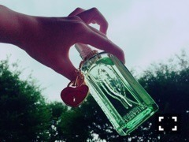

| 2016/07 26 Tue | 質問返しの名前どうしよかな。いいアイデアあるかな。(´>∀<｀)ゝ |
ちはるーむへようこそ(｡･o･｡)ﾉ
明日からCDが発売されるね！
わくわく。
今回、アンダーメンバーは
CDの裏のジャケットに登場しています！
皆さんよかったら
手に取ってご覧ください♡
-------------------------♡
質問返し！
今回は前回より、少し多めに返します♪
 香水なに使ってる？
香水なに使ってる？
→最近新しく買ったんだ！
L'OCCITANEの、
アニバーサリーヴァーベナオードトワレ♪

期間限定のハートのチャーム付き♡
今までのどの香水よりも付けやすくて
鼻につかない香り♪
お気に入り！
好きなテレビ番組は？
→B.L.Tでも同じ質問があって、
そこでは答えてない番組を挙げると
「すべらない話」！
昔の「すべらない話」を
わざわざ調べてみることもあるくらい好き。
握手会でどんな事を話したらいい？
→みなさんの話したい事、聞きたい事、
何でもいいよ！！
私は、私の知らない事を
教えてもらえると、とっても嬉しい。
だから皆さんの好きな事や、雑学や
教えたい事が何かあれば聞きたいな♪
でも何でもいいって言われるのが
1番難しいと思う(> <)
だからブログで提案するから
心配しなくて大丈夫だよ(﹡ˆ ˆ﹡)
オススメの化粧水は？
→無印良品の、高保湿の化粧水！
この化粧水をたっぷりと
ひたひたになるまでつけるのがオススメ。
高い化粧水をちまちまと使うより
良いと思ってる！
ヘッドホン派？イヤホン派？
→断然イヤホン派！
ヘッドホンは髪型が潰れちゃうっていう
のもあるんだけど、
イヤホンの、直接耳に届く感じが好き。
BOSEのイヤホンを愛用してます。
ちーちゃんにとっての勉強とは？
→人生の幅を広げるための、
1番身近な方法！
だから、何で勉強しなきゃいけないんだ〜
って沢山思うと思うけど
絶対勉強した方が将来役に立つと思う！
だから一緒に頑張ろうね。
ライブでのコールは、「ちはる」がいい？「ちーちゃん」がいい？
→凄く凄く考えたんだけど、
ステージから聞いてて
1番分かりやすいのが、
「ちはる」だと気付きました！！
だから皆さん、コールは
「ちはる」で宜しくお願いします♪
海外旅行に行くならどこがいい？
→エジプトに行きたいのは勿論だけど
今行きたいのはヨーロッパ。
ヨーロッパの街並みや
雰囲気を味わいたい！
あと、たくさん
博物館や資料館、美術館に行きたい！
男性は浴衣派？甚平派？
→難しい質問だけど...
大人っぽく見えるのは浴衣！
親しみやすいのは甚平！
どちらも似合ってたら素敵だと思うよ〜
緊張を紛らわすには何をしてますか？
→とにかく、冷静な自分を
心の中に置く。
落ち着け私。落ち着け私。と...
あと、
できるやれるできるやれる
君ならできるよできるやれる
という呪文を唱える。
暑い時は、扇風機派？エアコン派？
→扇風機派！
まだお家のエアコン使ってないんだ〜
家が風通しが良くて！
ライブ前にするルーティーンは？
→元祖overtureでは、背中の叩き合い。
気合いを入れるために。
2014真夏の全国ツアーovertureでは、
独自のダンス。
みんなの緊張をほぐすために。
お菓子の家に住むなら、ベッドは何？
→マシュマロがいい！
ふかふかふわふわで眠りたいな〜
マシュマロ好きだから
寝ながら食べるかもしれないけど(｡･o･｡)ﾉ
勉強してるときに心掛けてる事は何？
→声に出しながら、
勉強楽しい！頑張ろう！
と言うこと。
(周りに誰もいない場合)
疲れた〜出来ない〜分からない〜
と言葉に出すと、脳が
本当にそういう風に思ってしまうんだって。
だから楽しい！簡単！
と思ったり声に出すと、
脳が勘違いして覚えやすくなるらしい
という話を聞いてから実践してます。
暗記はどうやってしてますか？
→とにかく書いて覚える！
ルーズリーフを縦に折って、
縦にばーっと書いていく。
あと、間違えた問題にはマークを
一回一回つけて、
マークがついたところを何回も。
そのマークが沢山ついてる問題は
苦手っていうことだから
重点的に覚える！！
今日はここまで♪\( ˆoˆ )/
質問全部に答えられなくてごめんね...
質問してくれた皆さんありがとう( ;o; )
-------------------------♡
シークレットグラフィティー。
ひぐちくんの審査員席。
豪華だぜ...
友の会メンバー。
なかなかいかついメンツだぜ...
シークレットグラフィティー、
乃木中で放送されていたみたいで！
告知できてなくてごめんね(> <)
-------------------------♡
♬ ChihaMusic
「恋音と雨空」AAAさん
カラオケでよく歌うんだ！
ラップの部分も頑張ってる。
滑舌は良い方ではないけど...
PVも素敵だし
歌詞も切なくて
胸がぎゅっとなる。
今日物凄く眠い...
あくびが止まることを知らない...
うん、勉強出来そうなところまでやって、
眠くなったら寝ちゃおう！
うん、そうしよう！
余りにも早く寝たら、
朝やればいいだけの話！
人は睡魔には勝てないと思ってる。
あ！皆さん、睡魔に負ける前に
どうか、質問返しの名前を
つけてくださいな( ;o; )
(↑自分勝手。)
おやすみね〜
斎藤ちはる
コメント(339)
2016/07/26 23:30